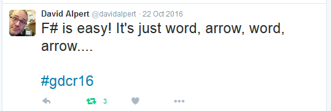

type ContactType =
| Twitter
| Blog
| GitHub
Full name: index.ContactType
| Blog
| GitHub
Full name: index.ContactType
union case ContactType.Twitter: ContactType
union case ContactType.Blog: ContactType
union case ContactType.GitHub: ContactType
val getContactInfo : _arg1:ContactType -> string
Full name: index.getContactInfo
Full name: index.getContactInfo
val name : string
Full name: index.name
Full name: index.name
val sayHello : n:string -> unit
Full name: index.sayHello
Full name: index.sayHello
val n : string
val printfn : format:Printf.TextWriterFormat<'T> -> 'T
Full name: Microsoft.FSharp.Core.ExtraTopLevelOperators.printfn
Full name: Microsoft.FSharp.Core.ExtraTopLevelOperators.printfn
val add1mult2 : (int -> int)
Full name: index.add1mult2
Full name: index.add1mult2
val xs : int list
Full name: index.xs
Full name: index.xs
val req : System.Net.WebRequest
Full name: index.req
Full name: index.req
namespace System
namespace System.Net
type WebRequest =
inherit MarshalByRefObject
member Abort : unit -> unit
member AuthenticationLevel : AuthenticationLevel with get, set
member BeginGetRequestStream : callback:AsyncCallback * state:obj -> IAsyncResult
member BeginGetResponse : callback:AsyncCallback * state:obj -> IAsyncResult
member CachePolicy : RequestCachePolicy with get, set
member ConnectionGroupName : string with get, set
member ContentLength : int64 with get, set
member ContentType : string with get, set
member CreatorInstance : IWebRequestCreate
member Credentials : ICredentials with get, set
...
Full name: System.Net.WebRequest
inherit MarshalByRefObject
member Abort : unit -> unit
member AuthenticationLevel : AuthenticationLevel with get, set
member BeginGetRequestStream : callback:AsyncCallback * state:obj -> IAsyncResult
member BeginGetResponse : callback:AsyncCallback * state:obj -> IAsyncResult
member CachePolicy : RequestCachePolicy with get, set
member ConnectionGroupName : string with get, set
member ContentLength : int64 with get, set
member ContentType : string with get, set
member CreatorInstance : IWebRequestCreate
member Credentials : ICredentials with get, set
...
Full name: System.Net.WebRequest
System.Net.WebRequest.Create(requestUri: System.Uri) : System.Net.WebRequest
System.Net.WebRequest.Create(requestUriString: string) : System.Net.WebRequest
System.Net.WebRequest.Create(requestUriString: string) : System.Net.WebRequest
property System.Net.WebRequest.Timeout: int
val success : bool * int
Full name: index.success
Full name: index.success
val isSuccess : bool
Full name: index.isSuccess
Full name: index.isSuccess
val value : int
Full name: index.value
Full name: index.value
type Order =
{OrderId: int;
CustomerId: int;
OrderItems: string list;}
Full name: index.Order
{OrderId: int;
CustomerId: int;
OrderItems: string list;}
Full name: index.Order
Order.OrderId: int
Multiple items
val int : value:'T -> int (requires member op_Explicit)
Full name: Microsoft.FSharp.Core.Operators.int
--------------------
type int = int32
Full name: Microsoft.FSharp.Core.int
--------------------
type int<'Measure> = int
Full name: Microsoft.FSharp.Core.int<_>
val int : value:'T -> int (requires member op_Explicit)
Full name: Microsoft.FSharp.Core.Operators.int
--------------------
type int = int32
Full name: Microsoft.FSharp.Core.int
--------------------
type int<'Measure> = int
Full name: Microsoft.FSharp.Core.int<_>
Order.CustomerId: int
Order.OrderItems: string list
Multiple items
val string : value:'T -> string
Full name: Microsoft.FSharp.Core.Operators.string
--------------------
type string = System.String
Full name: Microsoft.FSharp.Core.string
val string : value:'T -> string
Full name: Microsoft.FSharp.Core.Operators.string
--------------------
type string = System.String
Full name: Microsoft.FSharp.Core.string
type 'T list = List<'T>
Full name: Microsoft.FSharp.Collections.list<_>
Full name: Microsoft.FSharp.Collections.list<_>
type ValidationResult =
| OK
| Fail of (string * string) list
| Error of Exception
Full name: index.ValidationResult
| OK
| Fail of (string * string) list
| Error of Exception
Full name: index.ValidationResult
union case ValidationResult.OK: ValidationResult
union case ValidationResult.Fail: (string * string) list -> ValidationResult
union case ValidationResult.Error: System.Exception -> ValidationResult
Multiple items
type Exception =
new : unit -> Exception + 2 overloads
member Data : IDictionary
member GetBaseException : unit -> Exception
member GetObjectData : info:SerializationInfo * context:StreamingContext -> unit
member GetType : unit -> Type
member HResult : int with get, set
member HelpLink : string with get, set
member InnerException : Exception
member Message : string
member Source : string with get, set
...
Full name: System.Exception
--------------------
System.Exception() : unit
System.Exception(message: string) : unit
System.Exception(message: string, innerException: exn) : unit
type Exception =
new : unit -> Exception + 2 overloads
member Data : IDictionary
member GetBaseException : unit -> Exception
member GetObjectData : info:SerializationInfo * context:StreamingContext -> unit
member GetType : unit -> Type
member HResult : int with get, set
member HelpLink : string with get, set
member InnerException : Exception
member Message : string
member Source : string with get, set
...
Full name: System.Exception
--------------------
System.Exception() : unit
System.Exception(message: string) : unit
System.Exception(message: string, innerException: exn) : unit
Multiple items
module Option
from Microsoft.FSharp.Core
--------------------
type Option<'a> =
| Some of 'a
| None
Full name: index.Option<_>
module Option
from Microsoft.FSharp.Core
--------------------
type Option<'a> =
| Some of 'a
| None
Full name: index.Option<_>
union case Option.Some: 'a -> Option<'a>
union case Option.None: Option<'a>
val fib : n:int64 -> int64
Full name: index.fib
Full name: index.fib
val n : int64
Multiple items
val int64 : value:'T -> int64 (requires member op_Explicit)
Full name: Microsoft.FSharp.Core.Operators.int64
--------------------
type int64 = System.Int64
Full name: Microsoft.FSharp.Core.int64
--------------------
type int64<'Measure> = int64
Full name: Microsoft.FSharp.Core.int64<_>
val int64 : value:'T -> int64 (requires member op_Explicit)
Full name: Microsoft.FSharp.Core.Operators.int64
--------------------
type int64 = System.Int64
Full name: Microsoft.FSharp.Core.int64
--------------------
type int64<'Measure> = int64
Full name: Microsoft.FSharp.Core.int64<_>
val loop : (int64 -> int64)
val x : int64
Multiple items
type Decimal =
struct
new : value:int -> decimal + 7 overloads
member CompareTo : value:obj -> int + 1 overload
member Equals : value:obj -> bool + 1 overload
member GetHashCode : unit -> int
member GetTypeCode : unit -> TypeCode
member ToString : unit -> string + 3 overloads
static val Zero : decimal
static val One : decimal
static val MinusOne : decimal
static val MaxValue : decimal
...
end
Full name: System.Decimal
--------------------
System.Decimal()
System.Decimal(value: int) : unit
System.Decimal(value: uint32) : unit
System.Decimal(value: int64) : unit
System.Decimal(value: uint64) : unit
System.Decimal(value: float32) : unit
System.Decimal(value: float) : unit
System.Decimal(bits: int []) : unit
System.Decimal(lo: int, mid: int, hi: int, isNegative: bool, scale: byte) : unit
type Decimal =
struct
new : value:int -> decimal + 7 overloads
member CompareTo : value:obj -> int + 1 overload
member Equals : value:obj -> bool + 1 overload
member GetHashCode : unit -> int
member GetTypeCode : unit -> TypeCode
member ToString : unit -> string + 3 overloads
static val Zero : decimal
static val One : decimal
static val MinusOne : decimal
static val MaxValue : decimal
...
end
Full name: System.Decimal
--------------------
System.Decimal()
System.Decimal(value: int) : unit
System.Decimal(value: uint32) : unit
System.Decimal(value: int64) : unit
System.Decimal(value: uint64) : unit
System.Decimal(value: float32) : unit
System.Decimal(value: float) : unit
System.Decimal(bits: int []) : unit
System.Decimal(lo: int, mid: int, hi: int, isNegative: bool, scale: byte) : unit
System.Decimal.TryParse(s: string, result: byref<decimal>) : bool
System.Decimal.TryParse(s: string, style: System.Globalization.NumberStyles, provider: System.IFormatProvider, result: byref<decimal>) : bool
System.Decimal.TryParse(s: string, style: System.Globalization.NumberStyles, provider: System.IFormatProvider, result: byref<decimal>) : bool
val v : decimal
val failwith : message:string -> 'T
Full name: Microsoft.FSharp.Core.Operators.failwith
Full name: Microsoft.FSharp.Core.Operators.failwith
val printFirstItems : order:Order -> unit
Full name: index.printFirstItems
Full name: index.printFirstItems
val order : Order
val x : string
val y : string
val printResult : result:ValidationResult -> unit
Full name: index.printResult
Full name: index.printResult
val result : ValidationResult
val es : (string * string) list
Multiple items
module List
from Microsoft.FSharp.Collections
--------------------
type List<'T> =
| ( [] )
| ( :: ) of Head: 'T * Tail: 'T list
interface IReadOnlyCollection<'T>
interface IEnumerable
interface IEnumerable<'T>
member GetSlice : startIndex:int option * endIndex:int option -> 'T list
member Head : 'T
member IsEmpty : bool
member Item : index:int -> 'T with get
member Length : int
member Tail : 'T list
static member Cons : head:'T * tail:'T list -> 'T list
static member Empty : 'T list
Full name: Microsoft.FSharp.Collections.List<_>
module List
from Microsoft.FSharp.Collections
--------------------
type List<'T> =
| ( [] )
| ( :: ) of Head: 'T * Tail: 'T list
interface IReadOnlyCollection<'T>
interface IEnumerable
interface IEnumerable<'T>
member GetSlice : startIndex:int option * endIndex:int option -> 'T list
member Head : 'T
member IsEmpty : bool
member Item : index:int -> 'T with get
member Length : int
member Tail : 'T list
static member Cons : head:'T * tail:'T list -> 'T list
static member Empty : 'T list
Full name: Microsoft.FSharp.Collections.List<_>
val iter : action:('T -> unit) -> list:'T list -> unit
Full name: Microsoft.FSharp.Collections.List.iter
Full name: Microsoft.FSharp.Collections.List.iter
val p : string
val m : string
val e : System.Exception
namespace System.Text
namespace System.Text.RegularExpressions
val pattern : string
val v : string
val m : Match
Multiple items
type Regex =
new : pattern:string -> Regex + 2 overloads
member GetGroupNames : unit -> string[]
member GetGroupNumbers : unit -> int[]
member GroupNameFromNumber : i:int -> string
member GroupNumberFromName : name:string -> int
member IsMatch : input:string -> bool + 1 overload
member Match : input:string -> Match + 2 overloads
member MatchTimeout : TimeSpan
member Matches : input:string -> MatchCollection + 1 overload
member Options : RegexOptions
...
Full name: System.Text.RegularExpressions.Regex
--------------------
Regex(pattern: string) : unit
Regex(pattern: string, options: RegexOptions) : unit
Regex(pattern: string, options: RegexOptions, matchTimeout: System.TimeSpan) : unit
type Regex =
new : pattern:string -> Regex + 2 overloads
member GetGroupNames : unit -> string[]
member GetGroupNumbers : unit -> int[]
member GroupNameFromNumber : i:int -> string
member GroupNumberFromName : name:string -> int
member IsMatch : input:string -> bool + 1 overload
member Match : input:string -> Match + 2 overloads
member MatchTimeout : TimeSpan
member Matches : input:string -> MatchCollection + 1 overload
member Options : RegexOptions
...
Full name: System.Text.RegularExpressions.Regex
--------------------
Regex(pattern: string) : unit
Regex(pattern: string, options: RegexOptions) : unit
Regex(pattern: string, options: RegexOptions, matchTimeout: System.TimeSpan) : unit
Regex.Match(input: string, pattern: string) : Match
Regex.Match(input: string, pattern: string, options: RegexOptions) : Match
Regex.Match(input: string, pattern: string, options: RegexOptions, matchTimeout: System.TimeSpan) : Match
Regex.Match(input: string, pattern: string, options: RegexOptions) : Match
Regex.Match(input: string, pattern: string, options: RegexOptions, matchTimeout: System.TimeSpan) : Match
property Group.Success: bool
val x : Group
property Match.Groups: GroupCollection
property Capture.Value: string
val skip : count:int -> list:'T list -> 'T list
Full name: Microsoft.FSharp.Collections.List.skip
Full name: Microsoft.FSharp.Collections.List.skip
type EmailAddress = string
Full name: index.EmailAddress
Full name: index.EmailAddress
Multiple items
union case VerifiedAddress.VerifiedAddress: EmailAddress -> VerifiedAddress
--------------------
type VerifiedAddress = | VerifiedAddress of EmailAddress
Full name: index.VerifiedAddress
union case VerifiedAddress.VerifiedAddress: EmailAddress -> VerifiedAddress
--------------------
type VerifiedAddress = | VerifiedAddress of EmailAddress
Full name: index.VerifiedAddress
type EmailContact =
| Unverified of EmailAddress
| Verified of VerifiedAddress
Full name: index.EmailContact
| Unverified of EmailAddress
| Verified of VerifiedAddress
Full name: index.EmailContact
union case EmailContact.Unverified: EmailAddress -> EmailContact
union case EmailContact.Verified: VerifiedAddress -> EmailContact
val verifyEmailAddress : 'a -> Option<VerifiedAddress>
Full name: index.verifyEmailAddress
Full name: index.verifyEmailAddress
val sendPasswordReset : VerifiedAddress -> unit
Full name: index.sendPasswordReset
Full name: index.sendPasswordReset
val email : EmailAddress
Beyond the Basics with F#

About me
- Shane Charles
- White Light Computing, Inc.
- Functional programming enthusiast
- Board member for Winnipeg .Net UG
1: 2: 3: 4: 5: 6: |
|
Path
- Whirlwind Tour of F#
- Recursion
- Active Patterns
- Domain Models
- Computation Expressions
- Azure Function
- Summary
Why Functional
- Step outside our known world
-
Immutability
- Different way of thinking
- Parallel processing
- Predictability
- smaller pieces for a larger solution
F#
- General purpose language on the CLR
- Functional First
- Immutable by default
- Structural equality by default
- Type Inference
Keywords
letuserectype
Hello, Operator?
1: 2: 3: 4: 5: 6: 7: 8: 9: 10: 11: 12: 13: 14: |
|
Necessary Evil
1: 2: 3: |
|
Reading F#

Tuples
Grouping of seemingly unrelated values.
1: 2: |
|
Tuples Don'ts
- No more than 3 values
- Don't pass them as data
Records
Grouping of read-only named values.
1: 2: 3: |
|
Discrimanted Unions
A choice of one or the other.
1: 2: 3: 4: |
|
Option
- Avoid nulls
1: 2: 3: |
|
Currying
Functions accepting multiple arguments are converted to multiple functions accepting one argument.
Higher Order Functions
A function that returns a function or takes a function as an argument.
Recursion
A function that calls itself to apply the same rules repeatedly.
Fibonacci
- It works, performant?
1: 2: 3: 4: 5: 6: |
|
Recursive Optimizations
- Tail Call Optimized
- Memoization
Recursion Alternatives
- Seq.map
- Seq.filter
- Seq.scan
- Seq.chunkBySize
- List.partition
- Seq.fold
- Seq.unfold
Pattern Matching
Deconstruct all the things.
1: 2: 3: |
|
Matching Lists
1: 2: 3: 4: 5: |
|
Matching Discriminated Unions
1: 2: 3: 4: 5: 6: 7: 8: 9: |
|
Active Patterns
Active patterns allow us to extend the default matching capabilities in F#.
- Hide some of the ugly code.
4 Types of Active Patterns
- Single Case Transform
- Partial Pattern
- Parameterized Pattern
- Complete Pattern
Partial Pattern / Parameterized
1: 2: 3: 4: 5: 6: 7: 8: 9: 10: |
|
Active Pattern Warning
- Don't go to the database
- No long running processes
- Maximum 7 choices for Complete Pattern
Domain Modelling
- Single case discriminated unions
- Make illegal states unrepresentable
Ensure Correctness
1: 2: 3: 4: 5: 6: 7: 8: 9: 10: 11: 12: 13: 14: |
|
Computation Expressions
a convenient syntax for writing computations that can be sequenced and combined using control flow constructs and bindings.
Wait?

Tough to Explain not Too Difficult to Use
- Builders or workflows
async { }seq { }!bang notation
Writing Our Own
- Create a class
-
Minimum required methods
bindreturn
F# Azure Function
-
Azure Function v1:
- super easy to get started
-
Azure Function v2:
- Current Status: bring the pain
No More F# Script Support
- Issues with dotnetcore 2 and FSI
- Precompiled Only
- No templates as of September 2018
- Lot's of steps
- Tears
- It will get better
Brief Summary of Pain (MacOS)
-
Install
- dotnetcore
- azure-functions-core-tools
- azure-cli
- vs code
- dotnet new F# dll
- Manual configuration
-
azure command line publish bug supporting only C#
- 5 stages of grief
- dotnet publish
- Deploy via VS Code
- Profit?
Extra Resources
- F# for Fun and Profit
- Precompiled Azure Functions
-
FSharpx
-
https://github.com/fsprojects/FSharpx.Extras
- Recommend: Prelude.fs
-
https://github.com/fsprojects/FSharpx.Extras
Thank You
1: 2: 3: 4: 5: 6: |
|